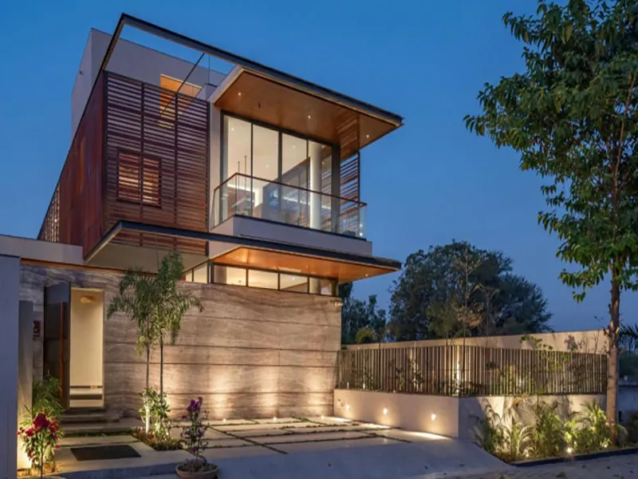

Redistribución
Reordenamos circulaciones y relaciones entre espacios.
Estudiamos la vivienda existente para mejorar funcionalidad, confort, eficiencia y relación con el entorno, conservando los elementos que aún aportan valor.
Antes de intervenir revisamos necesidades, estado aparente, orientación, distribución, envolvente e instalaciones. Así priorizamos acciones y evitamos remodelar solo la superficie sin atender las causas de los problemas.
Las soluciones dependen del estado del inmueble y del presupuesto disponible.
Reordenamos circulaciones y relaciones entre espacios.
Mejoramos aperturas, sombra y aprovechamiento de luz natural.
Buscamos recorridos de aire compatibles con la vivienda existente.
Evaluamos cubiertas, muros, ventanas, humedad y aislamiento.
Revisamos la conveniencia de actualizar redes y equipos.
Priorizamos conservación, reutilización y selección durable de materiales.
Una remodelación puede ocultar condiciones que solo se confirman al abrir o desmontar; por eso trabajamos por etapas.

Documentamos espacios, usos, problemas y objetivos.
Revisamos condiciones visibles y estudios adicionales necesarios.
Separamos acciones indispensables, convenientes y opcionales.
Integramos mejoras funcionales, ambientales y estéticas.
Documentamos soluciones y estimamos trabajos definidos.
Coordinamos obra y atendemos hallazgos de forma documentada.
Espacios más útiles y adecuados a nuevas necesidades.
Mejor respuesta térmica, luz y ventilación cuando sea viable.
Materiales e instalaciones compatibles con el proyecto.
Aprovechamiento de la estructura y componentes útiles existentes.
El diagnóstico inicial no sustituye dictámenes estructurales, pruebas de instalaciones ni estudios especializados cuando sean necesarios. Los ahorros y mejoras dependen del estado real, ejecución y uso.
Cuéntanos su ubicación, antigüedad aproximada y las necesidades principales.
Solicitar revisión inicial Escribir por WhatsApp